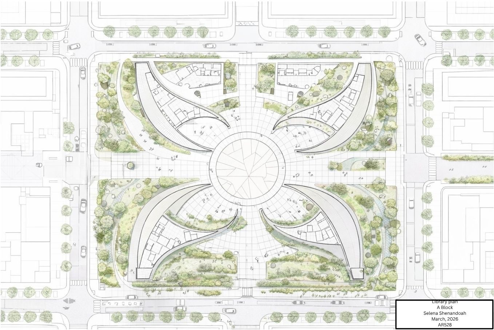
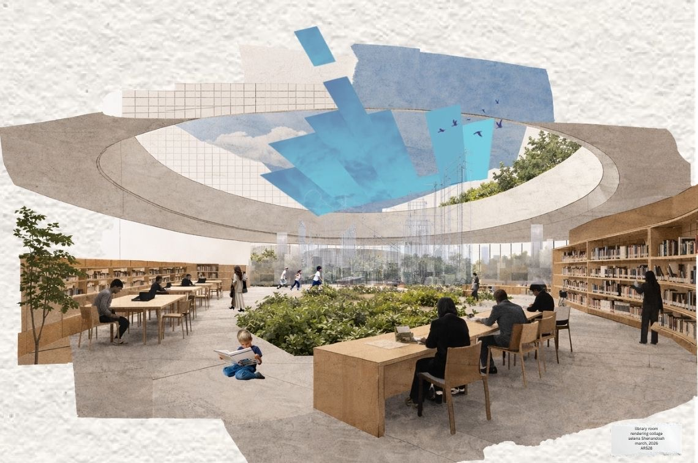

Snøhetta-Inspired
Library
A Set of Hands in the City
This project grew from a precedent study of the Norwegian architecture firm Snøhetta and a painting from my personal archive depicting two abstract hands holding a central space. I reinterpreted that image architecturally, designing a public library as a symbolic "set of hands" within the urban fabric — a structure that holds and protects a hub of knowledge, communication, and community.
The design operates across three scales: a city block (A Block), a building, and a room. Curved forms guide circulation, frame gathering spaces, and encourage movement between the built structure and the surrounding landscape. Influenced by Snøhetta's approach, the building emerges from and interacts with its site rather than sitting separately from it.
Urban Scale
The building is embedded within its block, with curved wings extending outward to shape the surrounding landscape and direct pedestrian movement toward a central gathering point.

Building Scale
The section reveals the library's curved structural system and its relationship to the landscape and metro platform below. The paired arching forms — rising to +12 m and +18 m — create a sheltered interior valley open to sky and movement.

Room Scale
The interior rendering shows the reading room as an open, planted landscape under a sweeping skylight. Tables, shelves, and planting are arranged to encourage both focused study and informal gathering, with views outward through glazed walls to the surrounding site.

Architecture as Stewardship
Rather than treating the building as an isolated object, I imagined it as something that emerges from and interacts with the site, shaping movement, gathering, and creating shared experience. The concept of the palms holding the library reflects an interest in architecture as a form of stewardship: built form that supports community knowledge, connection, and cultural continuity within the landscape.